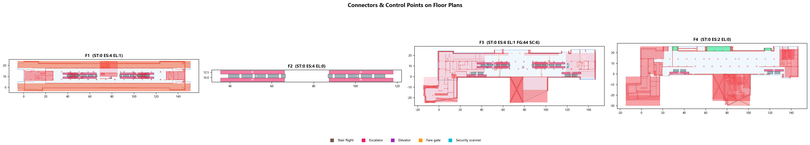

⚙️ Six-Step End-to-End Pipeline
A fully automated data pipeline transforms raw IFC BIM files into a queryable navigation graph, ABM simulation outputs, and evaluation reports — with a total runtime of 96.5 seconds.
00 Pipeline Overview
Entry point: python run_pipeline.py — all six steps run sequentially.
# Simplified pipeline entry (run_pipeline.py)
products = step0_load_products(cfg) # CSV tables
geometries, connectors, ctrl = step1_geometry(cfg, products)
nodes = step2_sampling(cfg, geometries)
graph = step3_build_graph(cfg, nodes, connectors, geometries)
routing = step4_routing(cfg, graph, ctrl)
sim_result = step5_simulate(cfg, graph, routing)
report = step6_evaluate(cfg, sim_result, routing)
STEP 0 Load Pre-processed Products
Loads four CSV tables exported from the data-preprocessing module.
Reads the four validated CSV files produced by data-preprocessing/:
Each table is validated for required columns, then packaged into a products dict passed downstream.
STEP 1 IFC Geometry Extraction
Parses three IFC files; returns walkable polygons, obstacles, connectors, and control points.
Uses ifcopenshell to load three IFC files and extract spatial elements:
IfcSlab→ floor polygon (Shapely convex hull)IfcBuildingElement→ obstacle AABB rectanglesIfcDoor→ Platform Screen Doors (dynamic)- CSV connector table → staircase/escalator/lift endpoints (exact)
Return type (3-tuple):
def extract_all_levels(cfg, products) -> tuple[
dict, # geometries: {level: {floor_polygon, obstacles, …}}
list, # all_connectors: [{type, level_from, level_to, pt_from, pt_to, …}]
dict, # control_points: {level: [entrance/exit points]}
]


STEP 2 Node Sampling
Populates each walkable floor polygon with a uniform 0.5 m grid of navigation nodes.
Sampling pipeline for each floor level:
- Generate uniform 0.5 m grid within floor polygon
- Filter: remove nodes within safety clearance of any obstacle (Shapely
buffer + intersects) - Apply YAML
forbidden_zones(maintenance shafts, track areas, service rooms) - Snap connector endpoints to nearest grid node (ensures cross-level connectivity)
- Inject semantic control points (ticket gates, station entrances/exits)


STEP 3 Navigation Graph Construction
Builds the 2.5D NetworkX graph connecting all in-floor nodes plus cross-floor connector edges.
Graph construction in two phases:
Phase A — In-floor edges: for each node, connect all neighbours within
graph.connection_radius_m (default 0.8 m) provided the line of sight is
obstacle-free (Shapely intersects check).
Phase B — Cross-level edges: for each validated
connector (staircase / escalator / lift), add bidirectional edges from the nearest
node on each floor, weighted by realistic traversal time (ascent/descent speed
coefficients from experiment_config.yaml).


STEP 4 Routing & OD Assignment
Defines semantic regions, builds an OD demand matrix, and pre-computes representative routes.
Semantic regions are loaded from experiment_config.yaml:
platform zones, ticketing areas, exit clusters, and service corridors. Each agent is
assigned a home region (origin) and a destination region drawn from the OD demand matrix.
Dijkstra is used for route pre-computation. The edge weight is travel time in seconds (distance ÷ speed, connector type adjustments applied). Routes are stored as node-ID lists for fast ABM replay.


STEP 5 ABM Simulation
200 Mesa agents execute in three scenarios; congestion and travel-time data are collected each tick.
Three scenarios are run using the same agent population but different environmental configurations:
- Scenario A — Static: no dynamic events; baseline flow measurement
- Scenario B — Dynamic: train arrival triggers Platform Screen Door opening/closing; agents re-plan after a congestion spike
- Scenario C — Wheelchair: lifts-only constraint; measures accessibility delay vs. baseline
At each tick, agents broadcast their current node; congestion weight is computed as local agent count ÷ node capacity and fed back into the edge-weight function for dynamic re-routing.
See the Simulation page for interactive visualisations of all three scenarios.
STEP 6 Evaluation & Output
Computes metrics, generates GeoJSON exports, figures, and a JSON report.
Key metrics computed:
| Metric | Scenario A | Scenario B | Scenario C |
|---|---|---|---|
| Arrival rate | 98.5% | 97.2% | 94.3% |
| Avg travel time | 160.2 s | 178.4 s | 224.7 s |
| Peak congestion | 0.41 | 0.78 | 0.39 |
| Re-plan events | 0 | 312 | 18 |
Output artefacts: GeoJSON pedestrian trajectories, congestion heatmap PNGs,
travel-time distribution CSVs, and an evaluation JSON summary (evaluation_report.json).